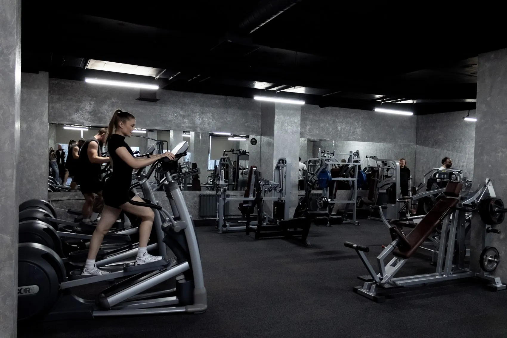
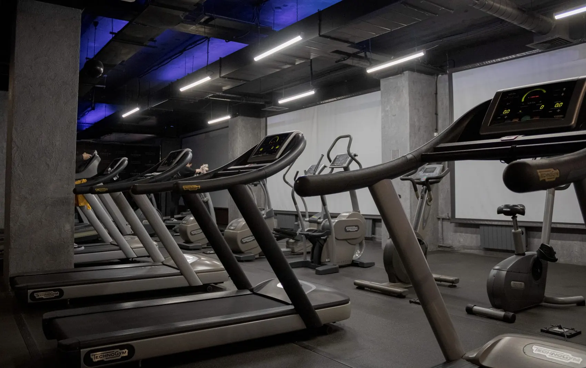
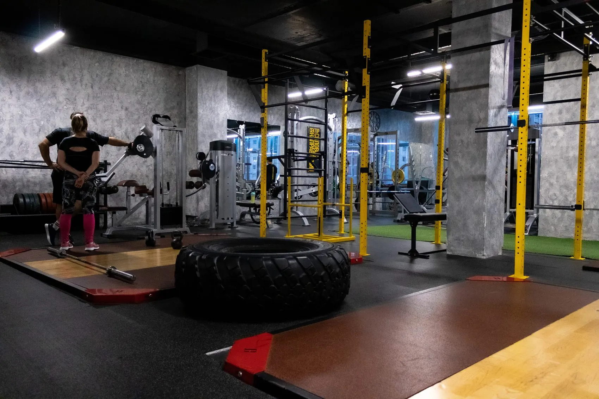
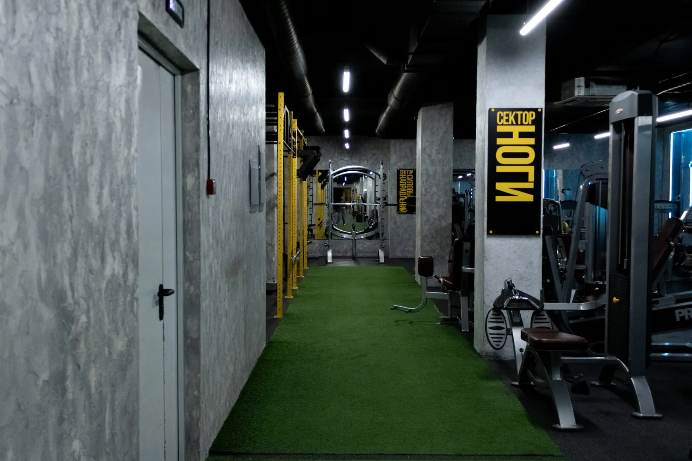

- Начинать с чередования: минута бега, две минуты ходьбы.
- Темп верный, если на бегу можно говорить целыми предложениями.
- Норма — 150–300 минут умеренной нагрузки в неделю, бег её закрывает.
1. Главная ошибка первой недели
Человек выходит и бежит столько, сколько может: быстро, до одышки. На следующий день болят голени, через две недели всё заканчивается.
Сердце и лёгкие привыкают к нагрузке быстрее, чем связки, сухожилия и кости. Поэтому наращивать надо медленнее, чем позволяет самочувствие.

2. Как войти: чередование
Первые недели — минута бега и две минуты ходьбы, всего 20–30 минут, три раза в неделю. Растёт доля бега, а не длительность занятия.
Тяжёлую неделю повторяют, а не переходят к следующей. Пропущенное не догоняют удвоенным объёмом: именно так и появляются боли в голенях.
3. Как выбрать темп
Разговорный тест: можете произнести целое предложение — темп правильный. Получаются только отдельные слова — вы бежите слишком быстро.
Пульс точнее считать по формуле Танаки: 208 минус 0,7 от возраста. Привычная «220 минус возраст» завышает максимум у молодых и занижает у людей старшего возраста.

4. Что снижает риск травмы
- Обувь под бег. Кеды и повседневные кроссовки передают ударную нагрузку на голень почти без гашения.
- Мягкое покрытие на старте. Грунт и стадион переносятся легче асфальта.
- Разминка и заминка. Пять минут ходьбы в начале и в конце заметно облегчают первые недели.
- Силовые для ног и таза. Они снижают нагрузку на суставы за счёт лучшего контроля движения.

Приходите попробовать — первая тренировка бесплатная
Тренер посмотрит технику и подберёт темп. Покупать ничего не нужно.
Хочу попробовать бесплатно5. Сколько бегать и что ещё нужно
Всемирная организация здравоохранения советует 150–300 минут умеренной нагрузки в неделю. Бег закрывает эту норму за три занятия по полчаса.
Бег не даёт стимула для мышц и костей, который создаёт работа с отягощением, поэтому силовые нужны отдельно — хотя бы раз в неделю.
Если есть сердечно-сосудистые заболевания, боли в суставах или лишний вес, нагрузку стоит обсудить с врачом до начала занятий.
Как начать бегать с нуля?
С чередования бега и ходьбы, а не с попытки бежать без остановки. Рабочая схема: первые две недели — минута бега на две минуты ходьбы, всего 20–25 минут три раза в неделю. Дальше постепенно увеличивают долю бега внутри занятия, а не общую длительность. Такой подход даёт опорным тканям время адаптироваться.
С какой скоростью бегать начинающему?
С такой, при которой вы можете произнести целое предложение. Это разговорный тест, и для начинающего он надёжнее расчётов по пульсу. Если хочется цифр, максимальный пульс точнее считать по формуле 208 минус 0,7 от возраста: привычная «220 минус возраст» систематически завышает его у молодых и занижает у людей старшего возраста.
Почему после бега болят голени?
Чаще всего из-за слишком быстрого наращивания нагрузки: сердечно-сосудистая система адаптируется быстрее, чем связки, сухожилия и кости, и дыхание позволяет бежать дольше, чем готовы опорные ткани. Помогает уменьшение объёма, беговая обувь с амортизацией, мягкое покрытие и три занятия в неделю вместо ежедневных. Если боль сохраняется в покое, нужен врач.
Сколько раз в неделю бегать?
Начинающему — три раза в неделю с днями отдыха между занятиями: они нужны опорным тканям. Норма активности по рекомендациям Всемирной организации здравоохранения — 150–300 минут умеренной аэробной нагрузки в неделю, и три получасовых занятия закрывают её значительную часть.
Нужны ли силовые тренировки бегуну?
Да, и по двум причинам. Первая: бег не даёт стимула для мышц и костей, который создаёт работа с отягощением, а рекомендации отдельно требуют силовых упражнений не реже двух раз в неделю. Вторая: сила мышц ног и таза улучшает контроль движения при беге и тем самым снижает нагрузку на суставы.
- WHO guidelines on physical activity and sedentary behaviour. Всемирная организация здравоохранения, 2020. www.who.int
- Age-Predicted Maximal Heart Rate in Recreational Marathon Runners: A Cross-Sectional Study on Fox's and Tanaka's Equations. 2018. pmc.ncbi.nlm.nih.gov
- Effect of High-Intensity Interval Training vs. Moderate-Intensity Continuous Training on Fat Loss and Cardiorespiratory Fitness in the Young and Middle-Aged. 2023. pmc.ncbi.nlm.nih.gov
- Paluch A.E. и соавт. Daily steps and all-cause mortality: a meta-analysis of 15 international cohorts. 2022. pubmed.ncbi.nlm.nih.gov
- Revisiting the stretch-induced force deficit: A systematic review with multilevel meta-analysis of acute effects. 2024. pmc.ncbi.nlm.nih.gov